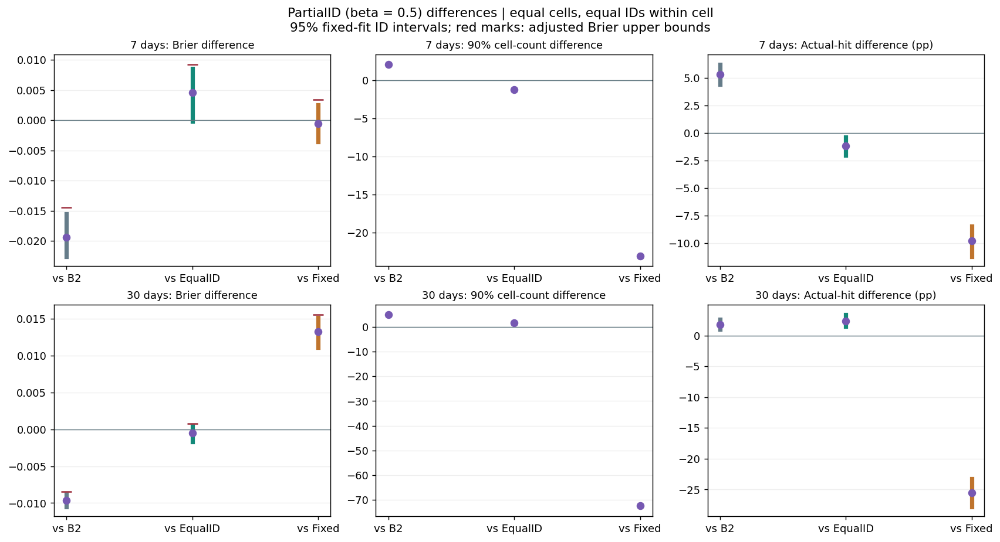
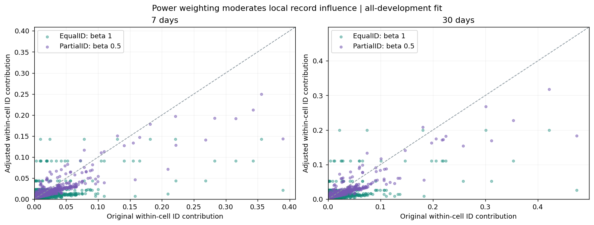
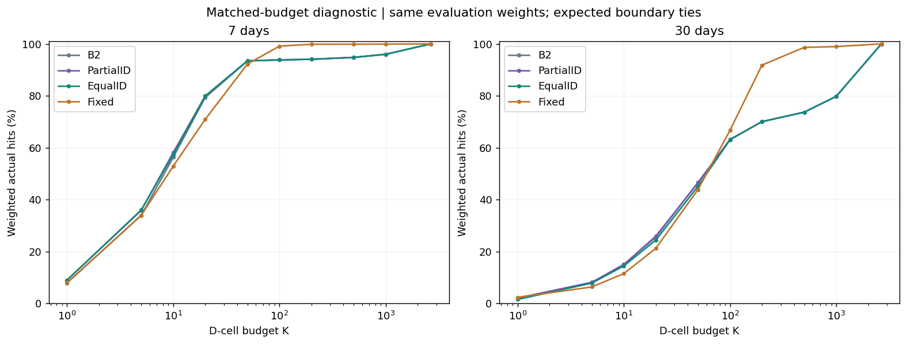
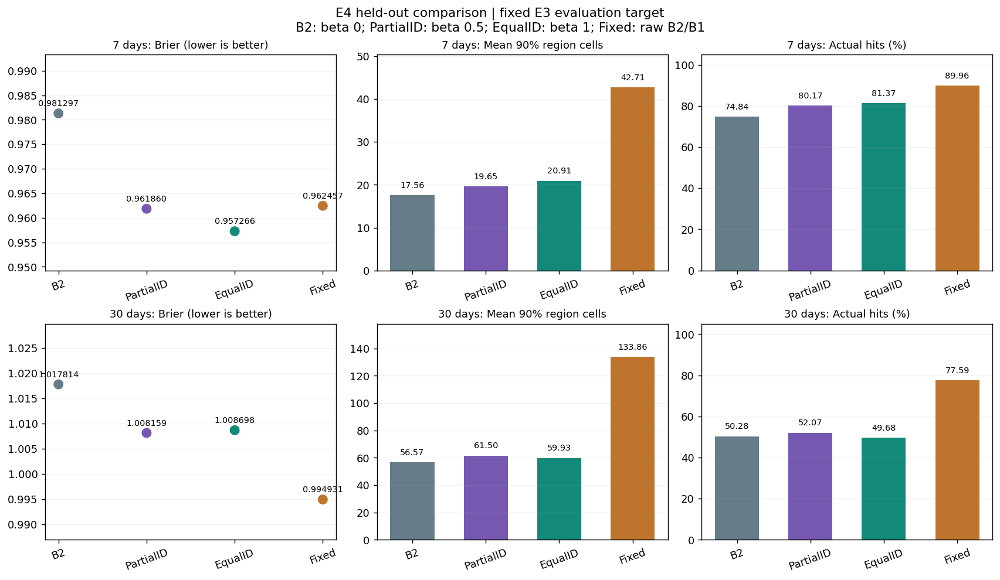
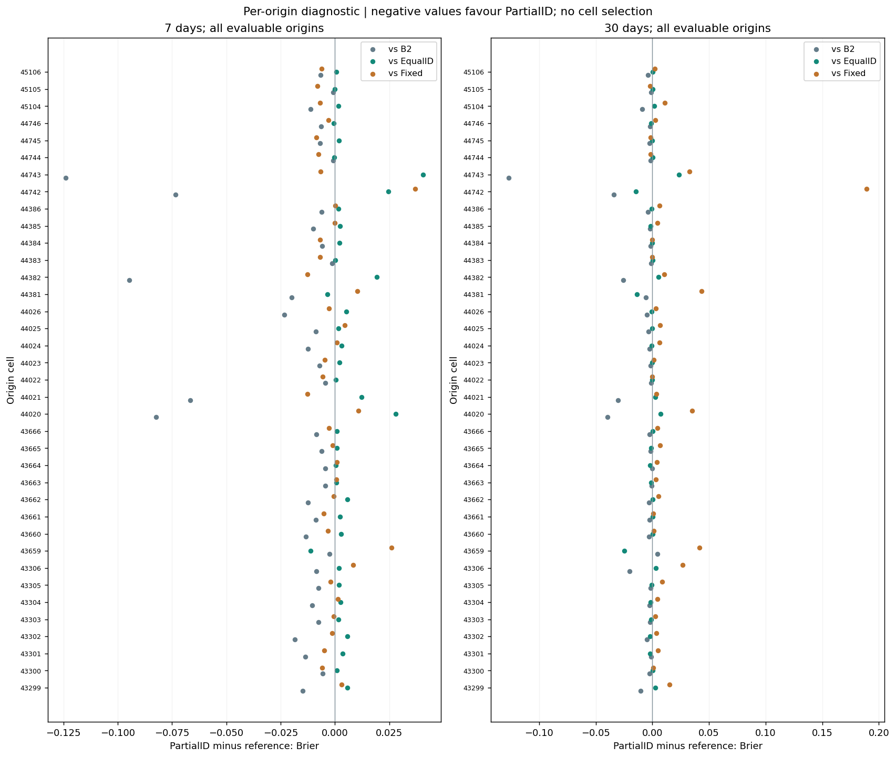
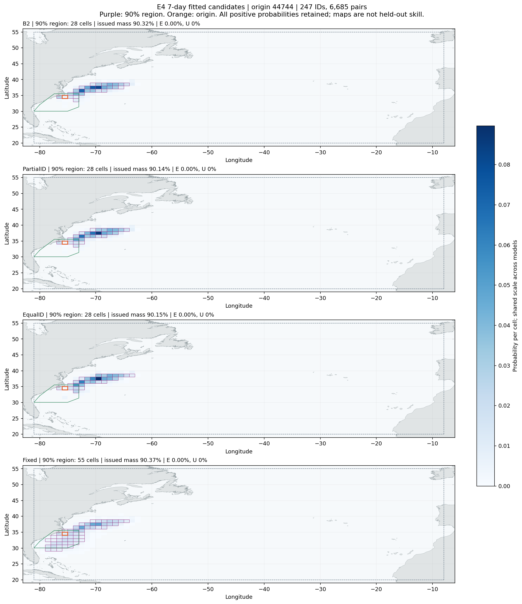
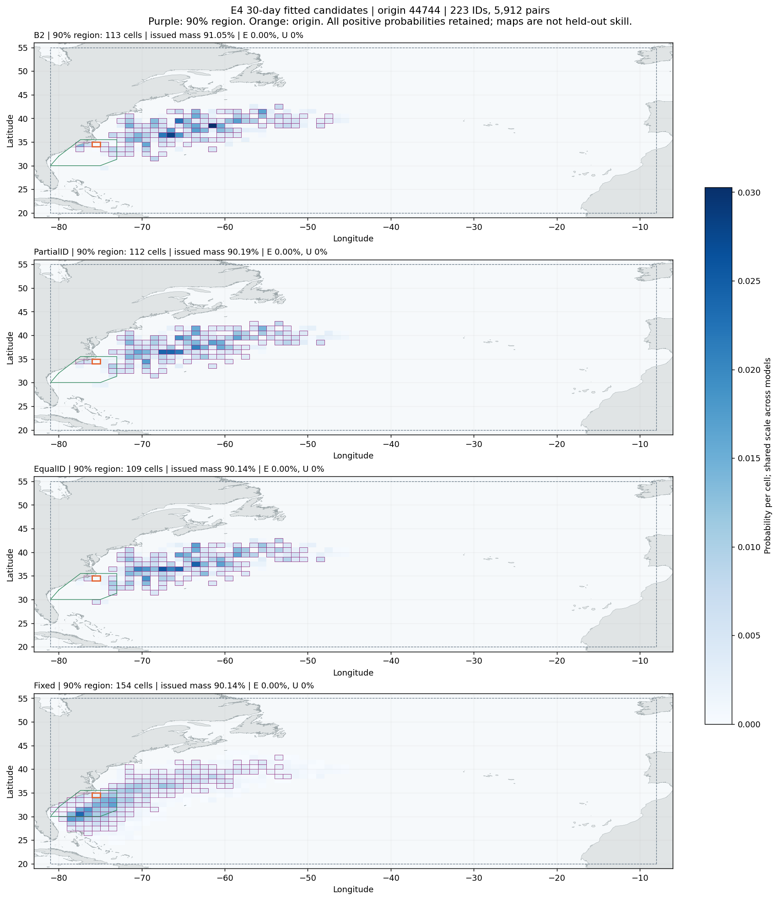

partial_weighting_e4_20261030T082826_141410Z · Development evidence · Review pending
7 days, PartialID versus B2: conditional_development_Brier_support. Brier change -0.01943665; 90% cells +2.093; actual hits +5.336 percentage points. Region/hit trade-off: True.
7 days, PartialID versus EqualID: no_measurable_Brier_gain. Brier change +0.00459358; 90% cells -1.255; actual hits -1.195 percentage points. Region/hit trade-off: True.
7 days, PartialID versus Fixed: point_improvement_uncertain. Brier change -0.00059729; 90% cells -23.060; actual hits -9.782 percentage points. Region/hit trade-off: True.
30 days, PartialID versus B2: conditional_development_Brier_support. Brier change -0.00965528; 90% cells +4.928; actual hits +1.790 percentage points. Region/hit trade-off: True.
30 days, PartialID versus EqualID: point_improvement_uncertain. Brier change -0.00053863; 90% cells +1.573; actual hits +2.388 percentage points. Region/hit trade-off: True.
30 days, PartialID versus Fixed: no_measurable_Brier_gain. Brier change +0.01322803; 90% cells -72.359; actual hits -25.520 percentage points. Region/hit trade-off: True.
| horizon_days | model | evaluable_cells | evaluable_ids | evaluable_id_cells | evaluable_pairs | brier | region90_cells | target_availability | zero_true_probability | actual_hits_percent |
|---|---|---|---|---|---|---|---|---|---|---|
| 7 | B2 | 37 | 385 | 4451 | 303288 | 0.981297 | 17.558281 | 1.000000 | 0.063489 | 74.837783 |
| 7 | EqualID | 37 | 385 | 4451 | 303288 | 0.957266 | 20.906307 | 1.000000 | 0.063489 | 81.369216 |
| 7 | Fixed | 37 | 385 | 4451 | 303288 | 0.962457 | 42.711648 | 1.000000 | 0.001522 | 89.955848 |
| 7 | PartialID | 37 | 385 | 4451 | 303288 | 0.961860 | 19.651338 | 1.000000 | 0.063489 | 80.174102 |
| 30 | B2 | 37 | 337 | 3974 | 268998 | 1.017814 | 56.570651 | 1.000000 | 0.314331 | 50.276098 |
| 30 | EqualID | 37 | 337 | 3974 | 268998 | 1.008698 | 59.925714 | 1.000000 | 0.314331 | 49.677954 |
| 30 | Fixed | 37 | 337 | 3974 | 268998 | 0.994931 | 133.857527 | 1.000000 | 0.014935 | 77.586057 |
| 30 | PartialID | 37 | 337 | 3974 | 268998 | 1.008159 | 61.498719 | 1.000000 | 0.314331 | 52.065710 |
| horizon_days | model | reference | metric | difference | lower_95 | upper_95 | adjusted_upper | defined_replicates |
|---|---|---|---|---|---|---|---|---|
| 7 | PartialID | B2 | brier | -0.019437 | -0.022588 | -0.015523 | -0.014494 | 5000 |
| 7 | PartialID | B2 | region90_cells | 2.093056 | 2.064548 | 2.120958 | NaN | 5000 |
| 7 | PartialID | B2 | region90_hit | 0.053363 | 0.043917 | 0.062409 | NaN | 5000 |
| 7 | PartialID | EqualID | brier | 0.004594 | -0.000217 | 0.008578 | 0.009292 | 5000 |
| 7 | PartialID | EqualID | region90_cells | -1.254970 | -1.285523 | -1.227303 | NaN | 5000 |
| 7 | PartialID | EqualID | region90_hit | -0.011951 | -0.020249 | -0.003945 | NaN | 5000 |
| 7 | PartialID | Fixed | brier | -0.000597 | -0.003616 | 0.002593 | 0.003414 | 5000 |
| 7 | PartialID | Fixed | region90_cells | -23.060310 | -23.152629 | -22.953176 | NaN | 5000 |
| 7 | PartialID | Fixed | region90_hit | -0.097817 | -0.112127 | -0.084396 | NaN | 5000 |
| 30 | PartialID | B2 | brier | -0.009655 | -0.010517 | -0.008694 | -0.008493 | 5000 |
| 30 | PartialID | B2 | region90_cells | 4.928068 | 4.860960 | 4.996913 | NaN | 5000 |
| 30 | PartialID | B2 | region90_hit | 0.017896 | 0.009702 | 0.026489 | NaN | 5000 |
| 30 | PartialID | EqualID | brier | -0.000539 | -0.001726 | 0.000537 | 0.000774 | 5000 |
| 30 | PartialID | EqualID | region90_cells | 1.573005 | 1.533768 | 1.613412 | NaN | 5000 |
| 30 | PartialID | EqualID | region90_hit | 0.023878 | 0.014398 | 0.034039 | NaN | 5000 |
| 30 | PartialID | Fixed | brier | 0.013228 | 0.011102 | 0.015166 | 0.015562 | 5000 |
| 30 | PartialID | Fixed | region90_cells | -72.358808 | -72.808779 | -71.874428 | NaN | 5000 |
| 30 | PartialID | Fixed | region90_hit | -0.255203 | -0.278059 | -0.232714 | NaN | 5000 |
Hit differences in this table are fractions, not percentage points.






